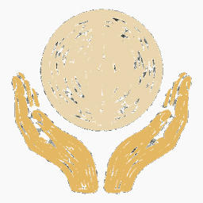
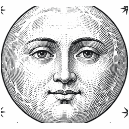
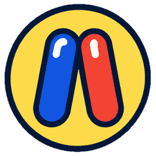

Working prototype · November 2026
Kin & Rhythm
A wellness app for mothers that starts with her energy, not her food. It finds the pattern she has been getting through on, matches a path to her body's rhythm, and is built to be needed less over time.
This is the working hub for the project: the prototype itself, and the reasoning behind it.
 Start here
Open the app
Start here
Open the app
Walk through it from the first screen as a new mom. On a phone it fills the screen like a real app, and anything you enter stays on your device.
Open the prototype 01Features
What is in it, screen by screen, and why each piece exists.
Read 02Core loops
The four rhythms that bring her back: a day, a hard moment, a moon, a season.
Read 03The relationship
What the app is to her, what it promises, and what it will never do.
Read 04The thinking
Energy, patterns, recovery, rewiring and kindness: the ideas underneath.
Read 05Brand plays
Three ways it could look, sound and be named. Each one runs as a live skin of the same app, with a name checked against the App Store.
See the three
Moonkept
Small Almanac
KinholdOr skip ahead and open it as Maya, six weeks in Elena, eleven days in Casey, just started
In one minute
What makes it different
- Energy, not weightNo scale and no goal number. Weight is optional, private and off by default.
- A season, not an identityHer stress pattern is named as something she is in, and she picks her own path out.
- Ten seconds a dayOne question, her anchors, then it tells her to put the phone down. The real ritual is twice a moon.
- Built to be needed lessAnchors that become second nature leave the list. A card on the fridge and a friend who asks do the rest.